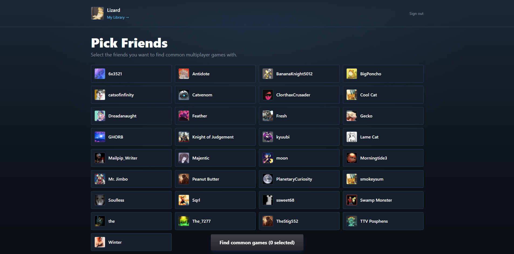
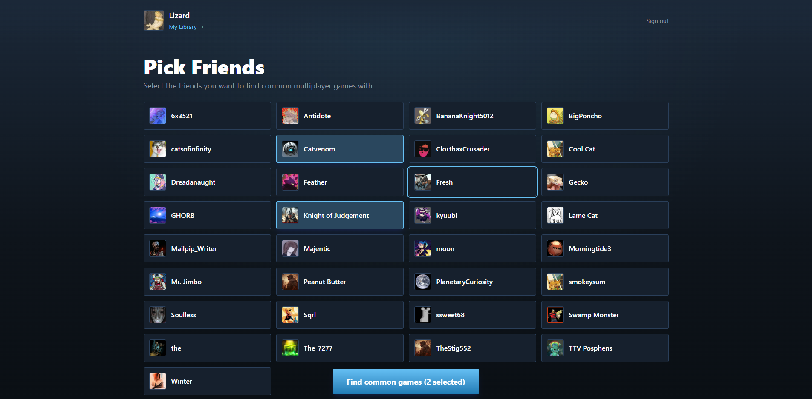
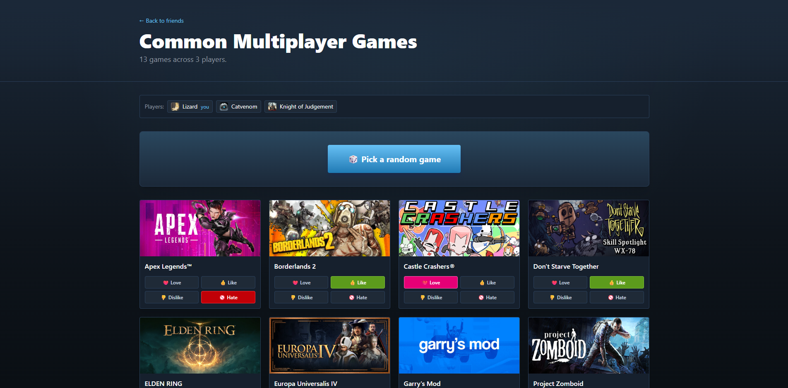
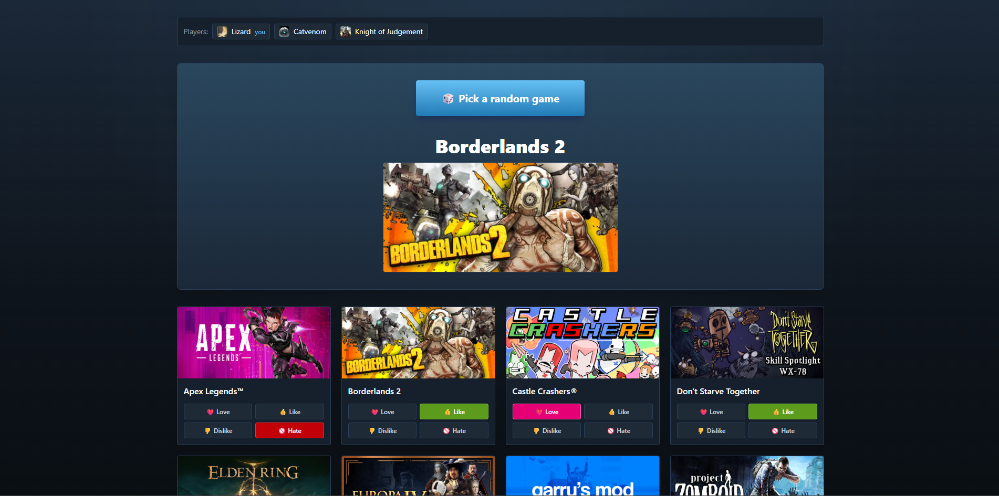
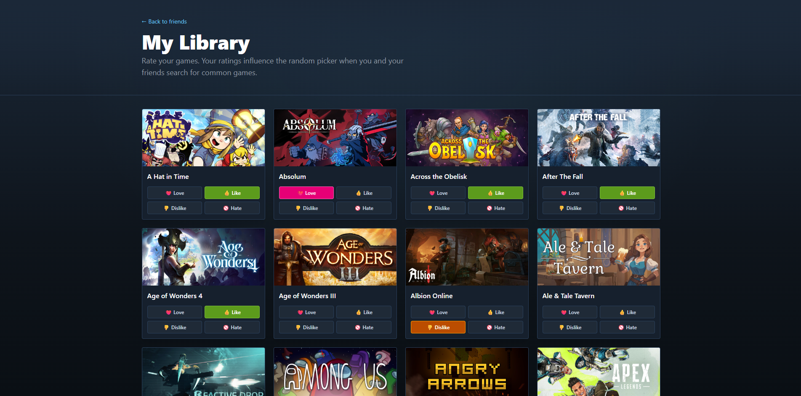

Select who's playing
Your Steam friends load automatically, you just need to select who's joining you.


For groups who spend longer picking than playing

Your Steam friends load automatically, you just need to select who's joining you.


Every multiplayer game shared by the whole group, with cover art and a header showing exactly who's counted in the result.
Hit Pick a random game and it chooses for you, weighted by how everyone rated their library.

Go through your library and mark how you feel about each game. Your ratings determine how likely a game is to be randomly selected. Loved and liked games will come up more often, hated games will never be selected.
